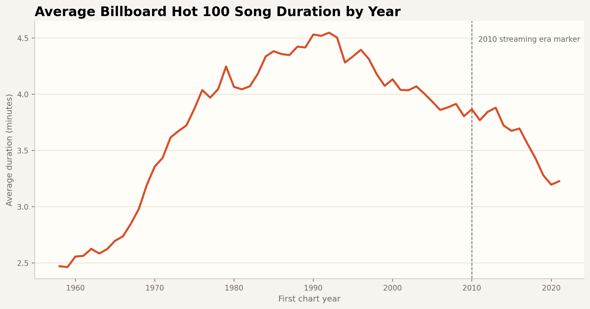
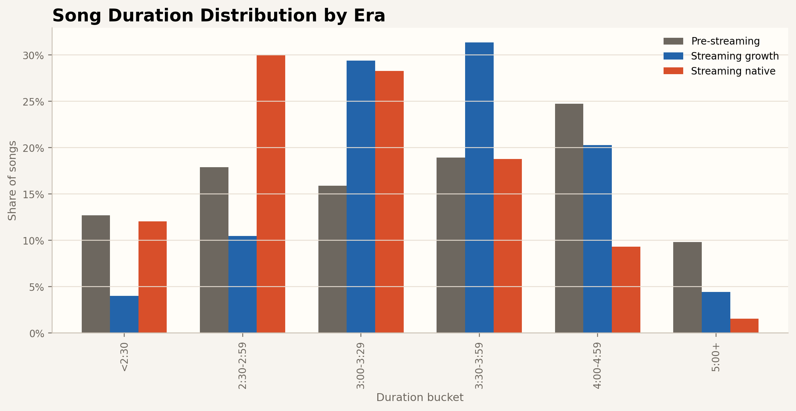
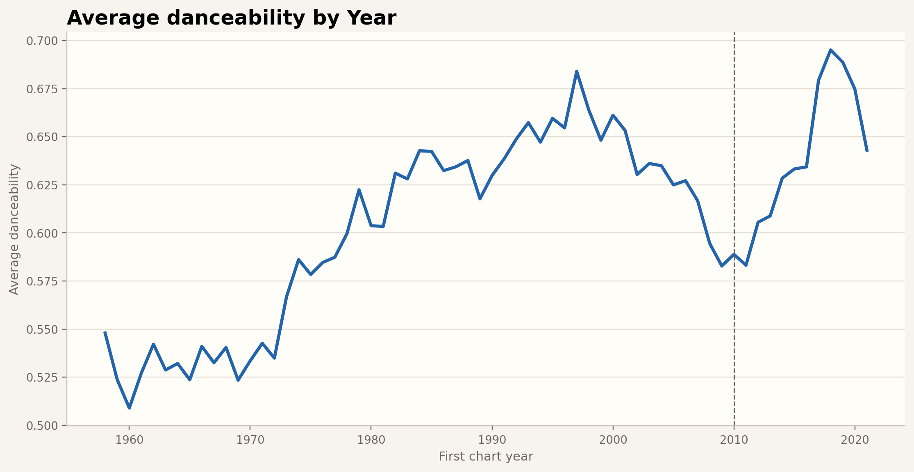
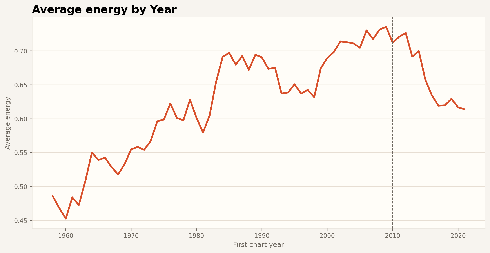
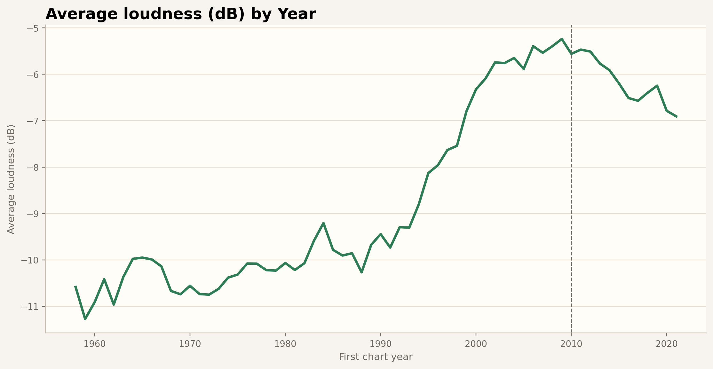
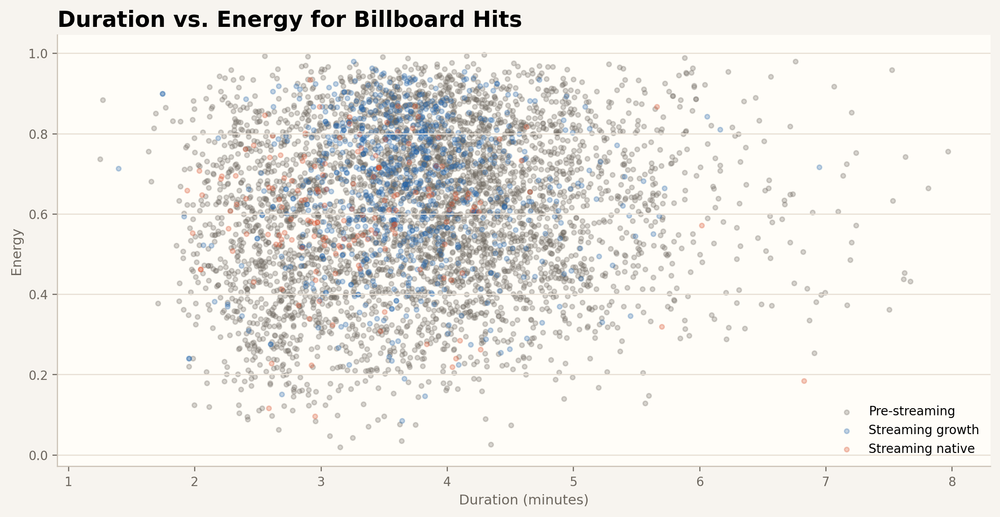
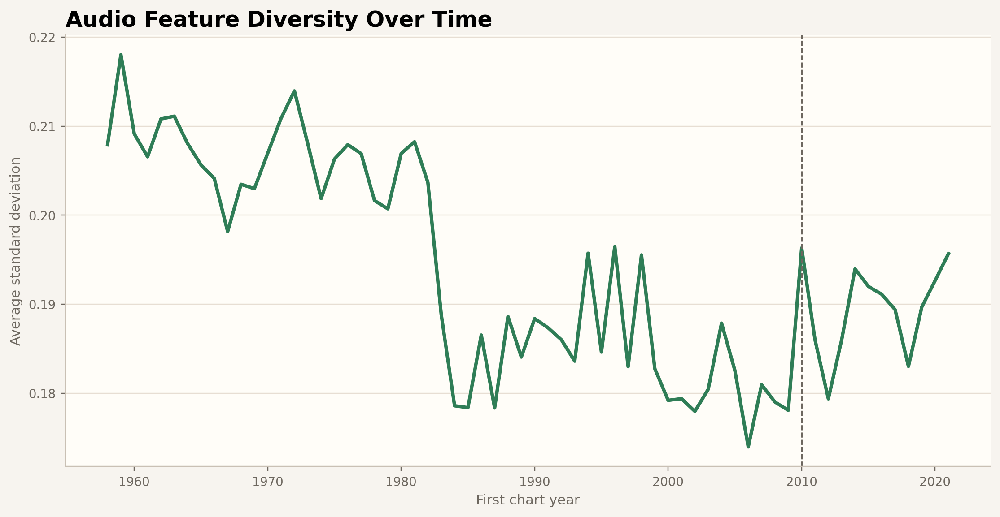
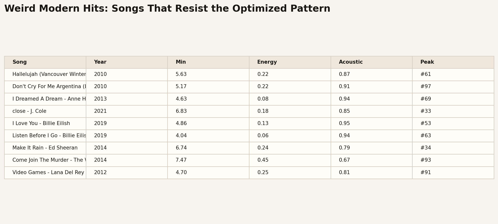

Project Writeup
Streaming changed how people listen: any song is one search away, and skipping costs nothing. We ask whether Billboard Hot 100 hits show signs of being designed for that behavior — shorter runtimes, higher energy, louder mixes, and more danceable grooves.
Using 24,206 deduplicated Hot 100 songs (1958–2021) merged with Spotify audio features, we compare three eras: pre-streaming (before 2010), streaming growth (2010–2019), and streaming native (2020 onward). The final interactive page uses scrollytelling to walk through an and-but-therefore narrative — what moved together, what diverged, and what the modern hit profile looks like.
Dataset
Billboard Hot 100 with Spotify audio features (Kaggle). Two files merged by SongID: weekly chart records and Spotify-derived audio features. After deduplication by first chart appearance, the cleaned dataset has 24,206 songs across 64 years.
Era Definitions
- Pre-streaming — before 2010 · 19,360 songs
- Streaming growth — 2010–2019 · 4,266 songs
- Streaming native — 2020 onward · 580 songs
Proposal Visualizations
Static charts exploring duration, audio features over time, era comparisons, and outliers that resist the trend.







